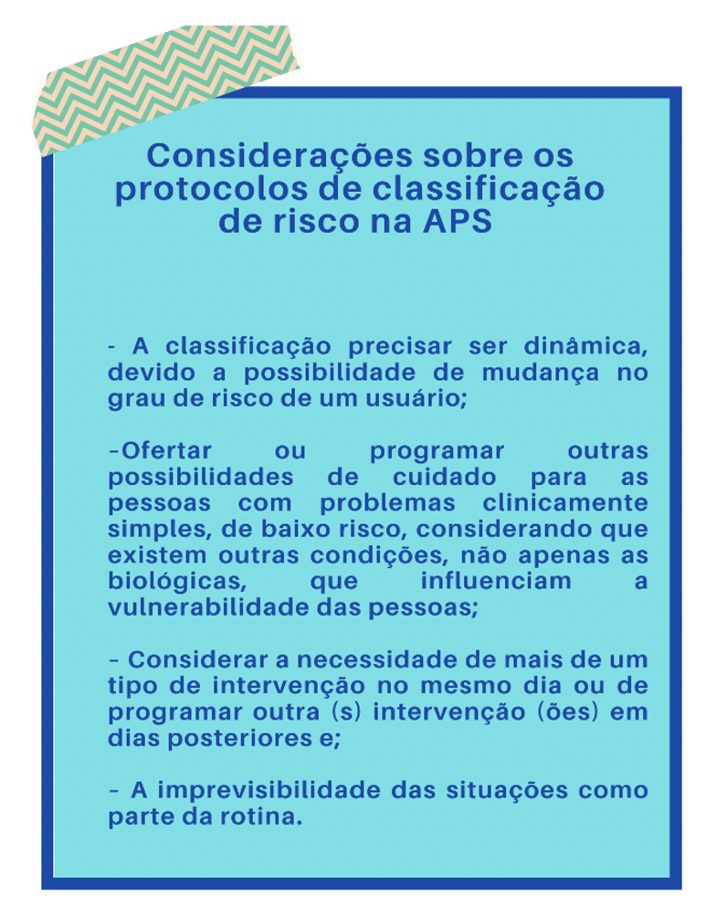

TÓPICO 2
TERRITORIALIZAÇÃO EM SAÚDE NA ESF
TÓPICO 2
TERRITORIALIZAÇÃO EM SAÚDE NA ESF
NA APS, os protocolos de classificação de risco são diferentes dos demais serviços, como os de urgências. Muitos casos que chegam demandam mais de uma intervenção e a pessoa pode ter sua necessidade atendida em diferentes momentos. Por isso, exige levar em conta algumas considerações:
ATENÇÃO
O volume II do CAB nº 28 do Ministério da Saúde sobre o acolhimento apresenta ofertas de abordagem para situações comuns no acolhimento à demanda espontânea. Para conhecer, acesse:
https://